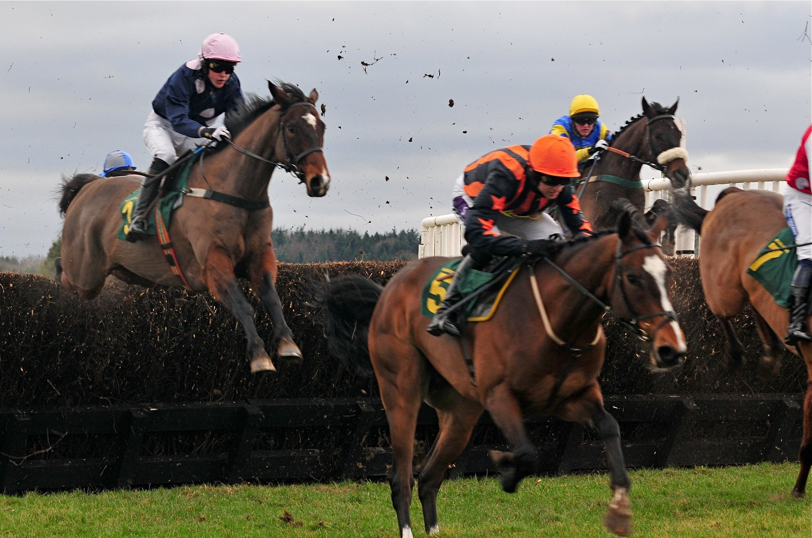

Ninja de l'Envol estrena la cuerda a derechas en el Saint-Léger des Trotteurs de Caen
El hipódromo de Caen acoge este sábado 10 de octubre la reunión principal del trote francés, con el Saint-Léger des Trotteurs, Grupo I de trote montado, y el Prix de la Ville de Caen como soporte del Quinté+.

El nombre propio de la tarde es Ninja de l'Envol. El pupilo de Pascal Castel ha sido la revelación del año entre los 3 años al trote montado y en 2026 no ha bajado de la segunda plaza en esa disciplina. Sale con el 16 en el Saint-Léger des Trotteurs (sexta carrera, 16:25) y figura entre los favoritos del Grupo I.
Será su primera salida montado sobre la cuerda a derechas. Su jockey, Guillaume Martin, ha indicado que ese cambio no debería suponerle ningún problema.
La reunión arranca con el Prix de Conquainvilliers (13:23), donde Kansas du Hocti, con el 6, llega con un registro sin fallos en este recorrido al montado: cuatro carreras, dos victorias y dos colocaciones. Lo monta Marius Durville, con quien acumula buenos resultados, y correrá desherrado, igual que en su último triunfo en esta pista, logrado con una reducción kilométrica de 1'12"6. Enfrente tendrá a Just Bird (5), que lo batió en Angers.
En el Prix d'Airel (13:58), el 4 es My Lovely Lady. En su última salida quedó enseguida en la retaguardia y seguía última a la salida de la curva final, pero aceleró con fuerza en la recta y superó a Mascotte du Stade en los últimos metros.
El Prix de la Ville de Caen - Prix d'Automne, soporte del Quinté+, se corre a las 15:15 como cuarta carrera. Allí el entorno de Isia du Chêne, con el 8, se muestra optimista pese a un verano por debajo de lo esperado. Su preparador, Julien Le Mer, lo resume así: «Isia du Chêne no ha estado este verano a la altura de lo que esperábamos, pero mi yegua está muy bien por las mañanas. Necesita tranquilizarnos en competición, pero la veo capaz de poner las cosas en su sitio y aspirar al podio».
Por Martín Larrañeta